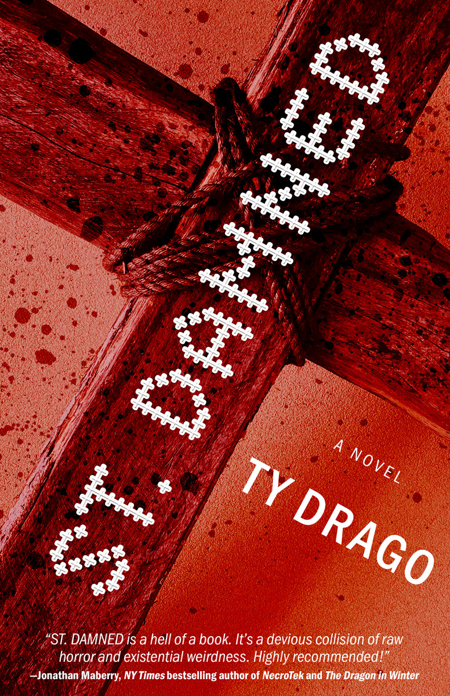

St. Damned
“ST. DAMNED is a hell of a book. It’s a devious collision of raw horror and existential weirdness. Highly recommended!” -–Jonathan Maberry, NY Times bestselling author of NecroTek and The Dragon in Winter
Five years ago, paranormal researcher Dr. Mia Lakatos was the sole survivor of an ill-conceived reality TV investigation of St. Damien’s Lutheran Church in Camden, New Jersey, a bloody encounter that destroyed her reputation and poisoned her life.
Now, out of the blue, the government has asked for her help. A vicious Columbian drug czar will be attending a key underworld summit across the street from the famous haunted church. The FBI is planning a stakeout inside St. Damien’s, and they need Mia along for her expertise. But nothing, absolutely nothing, will convince Mia to re-enter that hellish place, except maybe a cryptic decades-old message that might hold the key to cleansing “St. Damned” and finally freeing the scores of souls who are trapped there.
Suddenly, Mia Lakatos finds herself returning to the most dangerous haunted site on Earth to face down the deranged ghost of an infamous serial killer whose iron will rules over those innocent spirits in his sway. But the road to redemption is paved in blood—including, quite possibly, her own.